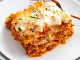

Lasagna

Recipe Description
The best lasagna recipe in the whole world!
My mom used to make this for my brother and I, it was our favorite.
Ingredients
- 2tsp extra virgin olive oil
- 1lb ground beef chuck
- 1/2 medium onion,chopped
- 1/2 large bell pepper, diced
- 2 cloves garlic, minced
- 1 can good quality tomato sauce
- 3oz tomato paste
- 1 (14oz) can crushed tomatoes
- 2 Tbs chropped fresh oregano, or2 teaspoons dried oregano
- 1/4C chopped fresh parsley, packed
- 1Tbs Italian Seasoning
- 1 pinch garlic powder and/or garlic salt
- 1Tbs red or white wine vinegar
- 1Tbs to 1/4C sugar
- Salt,to taste
- 9 unbroken lasagna noodles
- 15oz ricotta cheese
- 1&1/2 lbs mozzarella cheese, grated or sliced
- 1/4 lb freshly grated Parmesan cheese
Method
- Put pasta water on to boil
- Brown the ground beef
- Cook the bell pepper, onions, garlic, add back the beef
- Transfer to a medium sized pot, add tomatoes andd remaining sauce ingredients to build the sauce
- Boil and drain the lasagna noodles
- Head the oven to 375 degrees F
- Assemble the lasagna
- Bake
- Cool and serve